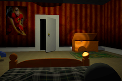
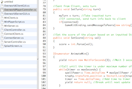
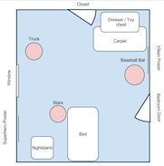
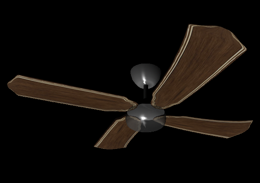

Night Light
About

Night Light was created in Unity 3D by Wes Anderson, Esther Estroff, and myself for our last project in our Construction of a Moving Image class. Although this is considered a "scene," it has definite game elements and has been developed in a game engine. The class' theme was inspiration, and our group hoped to convey the idea that one can make their own inspiration through choice.This game tells the story of a boy who has a fear of the dark. The story opens with the light turning out and the boy turning on his flashlight. The player must look around the room at various items that are either comforting or scary. If the player spends more time on scary items than good ones they will "lose," or be so scared that they sit through the night and must try again. If the player comforts themselves, however, they will win and see the sun rise having "inspired" themselves to make it through the night.
One of our important design decisions came in the form of excluding any sort of HUD. Since this has game elements of winning and losing, we had to convey states to the player. We decided to accomplish this by using natural indicators as the game was meant to be a theatrical scene. Information about two states must be shown: the scale of confidence or fear the player has, and the amount of time remaining. The first, confidence, is indicated through a vignetting effect. The edges close in and become darker as the player becomes more afraid, or open and become brighter if they are confident. Time is indicated by the flashlight. When there is little time left, the flashlight will begin blinking (as if its battery is dying) and will get progressively darker. Our team feels that these choices helped keep the game authentic and engaging.
Contributions


Programming
The official role I took in the group was programmer. All programming in the game was done by me - from the collision of the flashlight, to the progression of the story, the animation of the curtains, and the insertion of the animations.
Design
Along with the other 2 members in my group, we all contributed to the design of the scene: from the idea to the final tweaks. Design decisions included subject matter, room layout, items within the room, display of information, etc.

Modeling
All group members contributed to the game's models. My contributions include the modeling and texturing of: the bed, the fan, and the flashlight.